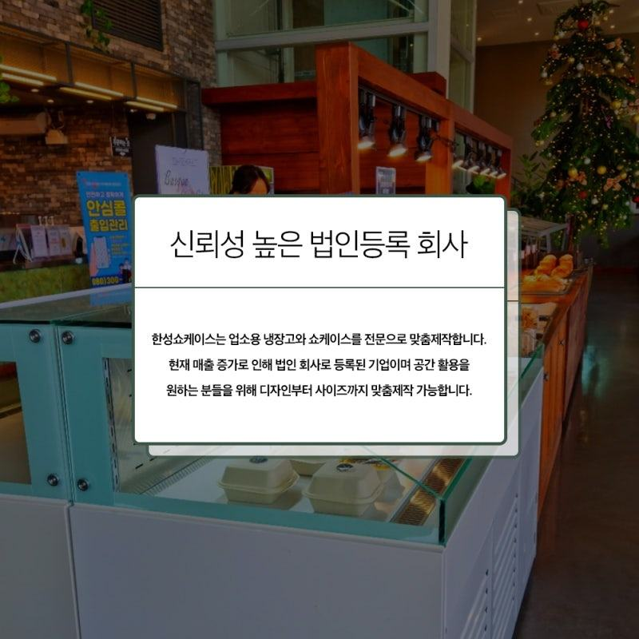
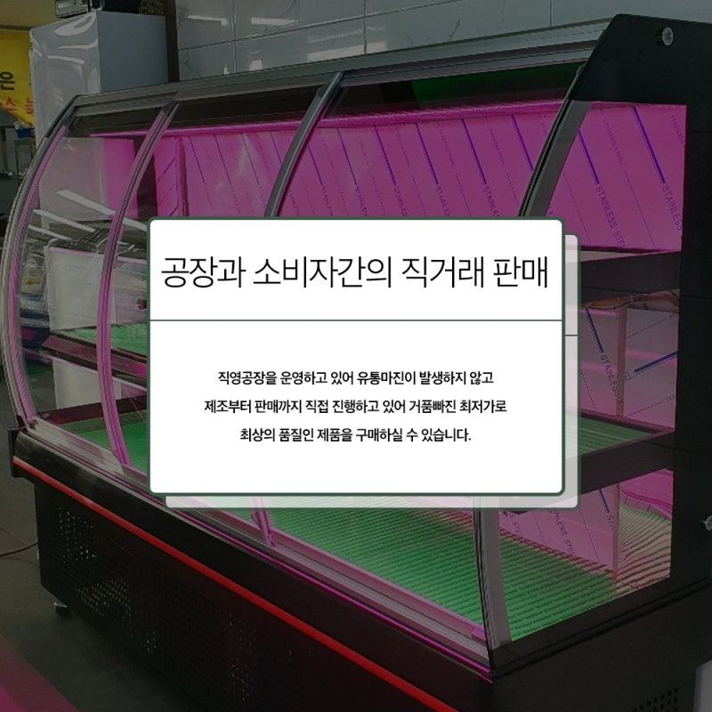

와인(음료)쇼케이스
업소용음료수냉장고 콤프레셔, 오래 쓰려면 알아야 할 것

업소용음료수냉장고 콤프레셔는 열을 잘 빼 줄 수 있는 환경에서 쉬는 시간을 가질 때 오래갑니다. 뒷면·하단 통풍을 막지 않고, 문 여닫는 시간을 줄이며, 미지근한 음료를 한꺼번에 많이 넣지 않는 습관이 콤프레셔 부담을 가장 크게 줄여 줍니다.
안녕하세요. 식당, 카페, 편의점용 음료 냉장 쇼케이스를 자체 공장에서 만드는 한성쇼케이스입니다.
음료수냉장고가 갑자기 미지근해져서 기사님을 부르면 가장 많이 듣는 말이 "콤프레셔 쪽 문제네요"입니다.
수리비 걱정도 되지만, 그 사이 팔지 못하는 음료와 손님 불만이 더 신경 쓰이시죠.
콤프레셔는 냉매를 압축해 냉기를 만드는 부품으로, 냉장고의 심장이라고 부를 만큼 중요합니다. 그런데 이 부품이 얼마나 오래가느냐는 제품 자체뿐 아니라 매장 환경과 사용 습관에 크게 좌우됩니다.
오늘은 콤프레셔에 무리를 주는 원인과 미리 알아챌 수 있는 이상 신호, 구매할 때 확인할 점을 정리해 드리겠습니다.
1. 콤프레셔가 지치는 환경
콤프레셔는 냉장고 안의 열을 바깥으로 내보내는 일을 합니다. 그런데 냉장고가 놓인 자리가 덥거나 열이 빠질 공간이 없으면, 같은 온도를 만들기 위해 훨씬 오래 돌아가야 합니다.
식당 주방 입구나 튀김기 근처, 햇빛이 드는 창가에 음료수냉장고를 두면 콤프레셔가 쉴 틈이 없습니다.
기계실이 하단에 있는 제품은 앞쪽 통풍 그릴 앞에 박스를 쌓아 두는 것만으로도 열이 갇힙니다.
- 열 나는 조리 기구와 거리를 두세요.
- 기계실 통풍 그릴 앞을 비워 두세요.
- 뒷벽과 간격을 두고 설치하세요.
2. 사용 습관이 콤프레셔를 지킵니다
음료 박스를 받자마자 미지근한 음료를 한꺼번에 가득 채우면, 콤프레셔는 그 열을 모두 빼낼 때까지 오래 쉬지 않고 돌아갑니다.
가능하면 나눠서 채우고, 이미 차가운 음료를 앞에, 새로 넣은 음료를 뒤에 두세요.
영업 중 문을 열어 둔 채 진열하거나, 홀 손님이 문을 오래 열고 고르는 구조라면 냉기 손실을 메우느라 콤프레셔 가동 시간이 늘어납니다.
보충은 한산한 시간에 몰아서 하는 편이 좋습니다.
응축기에 먼지와 기름때가 쌓이면 열을 내보내는 효율이 떨어집니다. 정기적으로 전원을 끄고 먼지를 털어 주는 것이 가장 간단한 콤프레셔 관리입니다.


3. 이런 신호가 보이면 점검을 받으세요
콤프레셔가 켜졌다 꺼졌다를 아주 짧은 간격으로 반복하거나, 평소보다 소리와 진동이 커졌다면 이상 신호일 수 있습니다.
설정 온도까지 내려가는 시간이 눈에 띄게 길어졌거나, 기계실 쪽이 평소보다 뜨겁게 느껴지는 것도 마찬가지입니다.
이럴 때 설정 온도를 더 낮추면 콤프레셔에 부담만 늘어납니다. 언제부터, 어떤 증상이 있었는지 적어 두고 점검을 받아 보세요.
일찍 확인할수록 수리 범위가 작아지는 경우가 많습니다.
- 짧은 간격으로 켜짐·꺼짐이 반복되는지
- 소리·진동이 커졌는지
- 냉각 속도가 느려졌는지
4. 구매할 때 확인할 것
음료수냉장고를 고를 때는 용량과 디자인만큼 콤프레셔 사양을 물어보세요. 어떤 부품을 쓰는지, 매장 크기와 문 여닫는 빈도에 맞는 용량인지, 소음은 어느 정도인지가 기준이 됩니다.
또 콤프레셔는 고장 시 수리 범위가 큰 부품이라, 보증 범위에 포함되는지와 고장이 났을 때 빠르게 대응할 서비스망이 있는지도 함께 확인하셔야 합니다.
한성쇼케이스는 유럽제·삼성 냉각 콤프를 사용하고 있습니다.
체크리스트
- 열 나는 기기와의 거리
- 기계실 통풍 그릴 확보
- 미지근한 음료 나눠 채우기
- 응축기 먼지 정기 청소
- 켜짐·꺼짐 반복과 소음 변화 관찰
- 콤프레셔 사양과 보증 범위 확인
현장에서 자주 보는 경우: 고장 나면 매출이 바로 멈출 때
가정용 냉장고가 고장 나도 불편하지만, 매장의 음료쇼케이스는 고장이 바로 매출로 이어집니다. 고장 부위에 따라 수리 견적도 달라서 업주분들은 수리비 걱정까지 함께 하시게 되죠.
그래서 저희는 제작부터 검수까지 철저하게 관리해 출고하고, 고장이 났을 때는 신속한 A/S로 부담을 줄여 드리고 있습니다.
자체 제조공장에서 제작부터 납품까지 직접 관리하기 때문에, 오래된 제품의 교체를 고민하시는 경우에도 매장 공간에 맞춘 제품으로 상담해 드립니다.


자주 묻는 질문
콤프레셔가 계속 돌아가는 소리가 나요. 고장인가요?
여름철이나 음료를 많이 채운 직후에는 오래 돌아가는 것이 정상일 수 있습니다. 다만 평소에도 쉬지 않고 돌고 온도가 잘 안 내려간다면 응축기 먼지와 통풍 상태를 확인한 뒤 점검을 받아 보세요.
콤프레셔 고장이면 냉장고를 바꿔야 하나요?
꼭 그렇지는 않습니다. 고장 원인과 범위, 제품 사용 기간을 함께 보고 수리와 교체 중 어느 쪽이 나은지 판단합니다.
어떤 콤프레셔를 쓰나요?
한성쇼케이스는 유럽제·삼성 냉각 콤프를 사용합니다. 매장 크기와 사용 환경에 맞는 사양은 상담 때 함께 안내해 드립니다.
매장 조건에 맞춰 만드는 한성쇼케이스
원하시는 제품 사진과 설치할 공간 사진만 보내 주셔도 매장에 맞는 구성을 추천해 드립니다.
- 전국 240여 개 A/S 전담 센터 운영
- 본사 대량 자재 매입으로 품질 대비 합리적인 가격
- 유럽제·삼성 냉각 콤프레셔 적용
- 국내 최초 쇼케이스 전문 디자이너 상주
매장 폭과 원하는 진열 구성을 알려 주세요. 실측과 견적을 안내해 드립니다.
031-986-2458